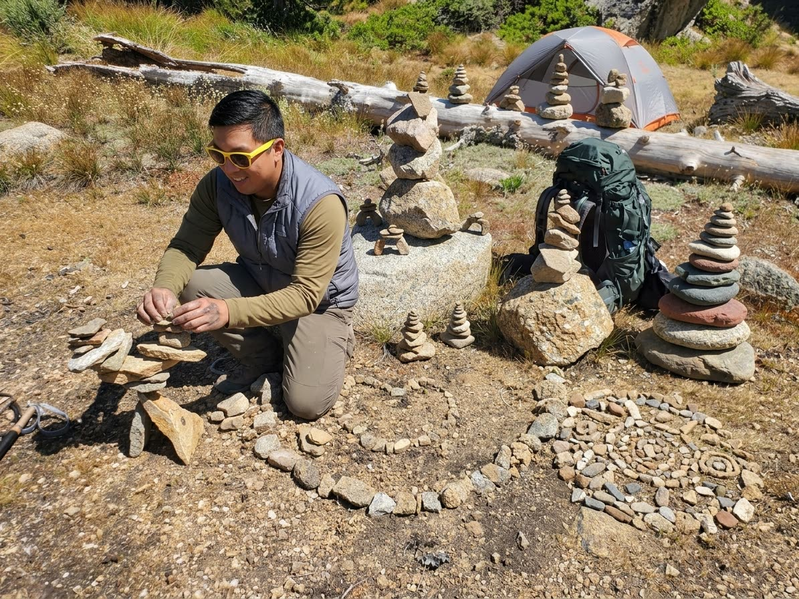
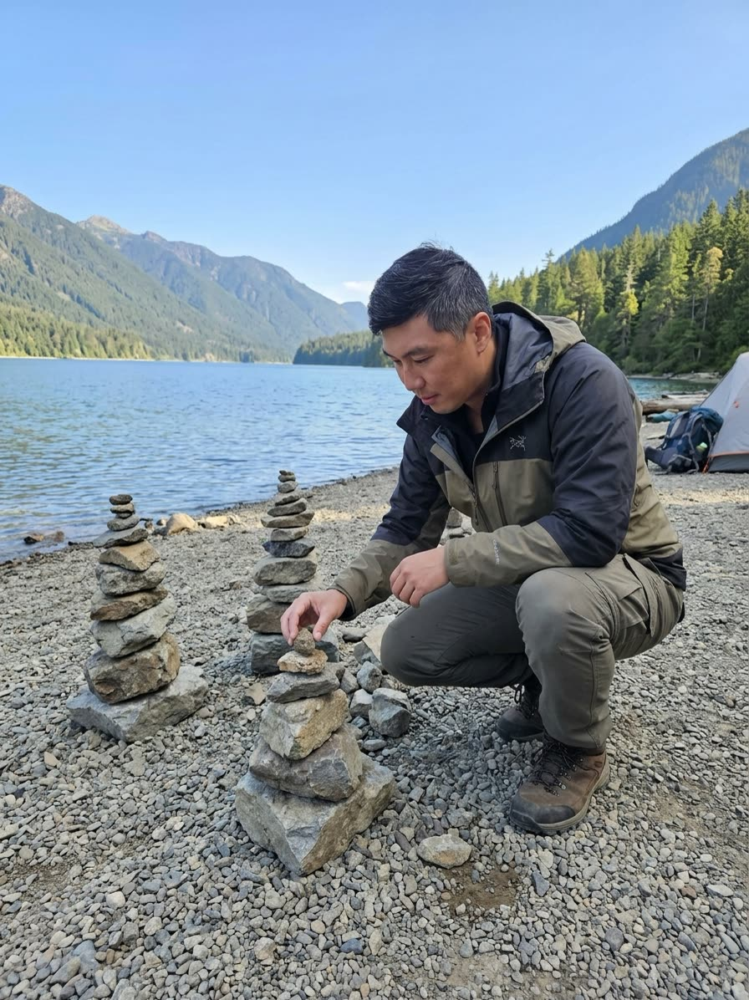
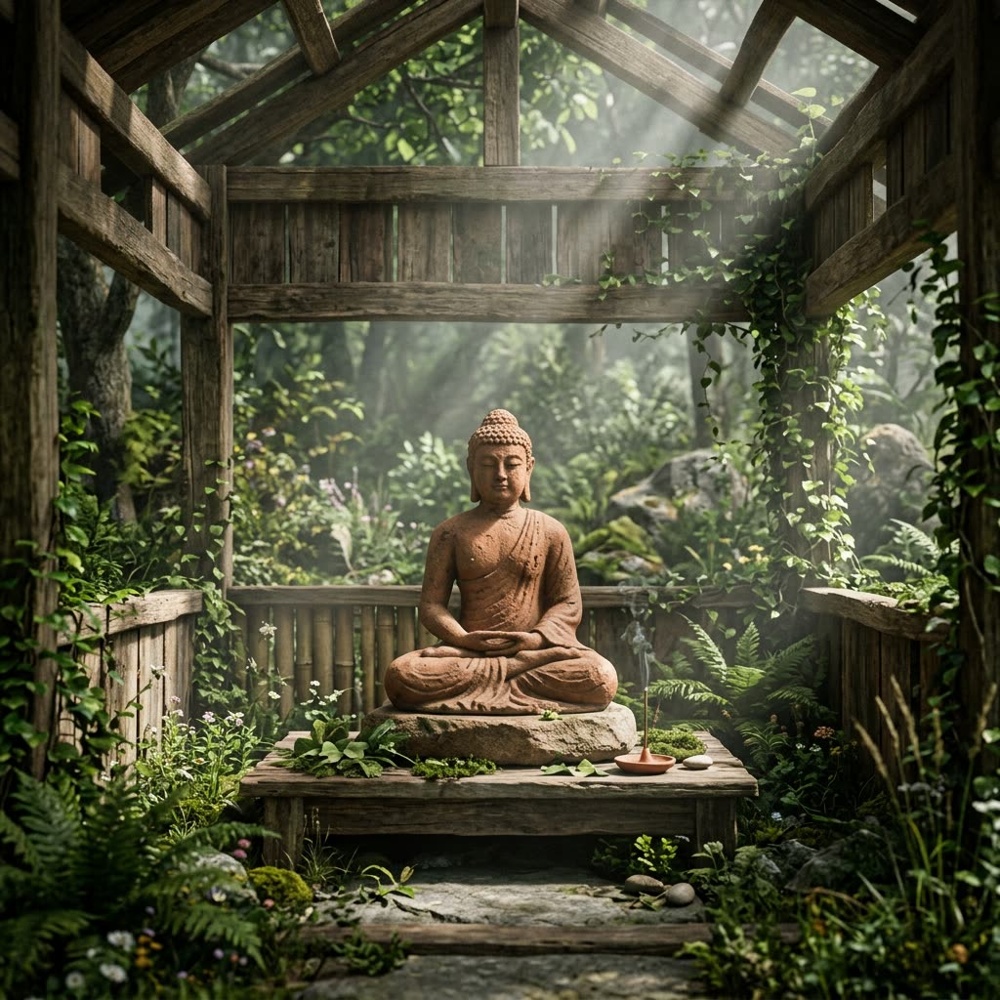

Every night at 1 AM, a new Buddha appears on the internet, and no one has to press a button. That's The Infinite Buddha, a gallery that paints itself one piece a day.
It didn't start as a website. It started with me making images in Gemini and movies with Viggle. Then I decided to see what I could do.
Starting with Gemini images
My first step was simple: see if I could edit a picture of mine to include myself. I started generating pictures of me setting up rock structures in nature and adding details that didn't exist in my real photos.
Here's the real photo from my camping trip that started it all:
And two of the AI remixes, with me, my tent and my backpack added in:


See the full set on my AI projects portfolio.
Adding motion with Viggle
Still images were great, but I wanted to see them move. Viggle let me put myself as a character image and animate it into a short clip in minutes.
Seeing myself dancing, throwing popcorn in a volcano and dunking a basketball was just fun to do.
The lesson: the AI tools are easy to start with. The creative part is choosing what to make and what to keep.
Watch all the clips in the Cool Moves Reel on my AI projects portfolio.
Coding The Infinite Buddha
I'm not a professional developer, so I built the site step by step with Claude as my coding partner. I worked on Windows, in PowerShell and VS Code, with the project folder on my Desktop.
The pieces:
| Part | What I used | What it does |
|---|---|---|
| Art generator | Python script + Gemini API | Creates a new Buddha image and a small WebP thumbnail |
| Website | React, Vite and Tailwind | Shows the gallery |
| Hosting | Vercel | Rebuilds and publishes the site on every push |
| Code | GitHub | Stores everything and tracks changes |
| Domain | Namecheap | Points theinfinitebuddha.xyz to Vercel |

The best moment was typing www.theinfinitebuddha.xyz into a browser and seeing my site load.
Making it infinite
A gallery I had to update by hand wasn't really infinite. So I set up GitHub Actions to do it for me, every day at 8:00 UTC (1 AM Pacific).
Each night, without me:
- GitHub starts the workflow and runs the Python generator.
- Gemini creates a new Buddha, using an API key stored as a repo secret.
- A bot commits the image, its thumbnail and the updated gallery list.
- Vercel sees the new commit and redeploys the site.
The site grows on its own, one Buddha a day.
What I learned and what's next
The biggest lesson: Have fun and try things out!
What's next:
- Build a personal website for my AI projects and work. It's started: you're on it.
- Understand how agents work.
- Stay balanced.
Come see what the Buddha made today at www.theinfinitebuddha.xyz. Check back tomorrow, there'll be a new one.